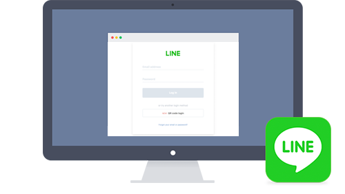

라인(Line) 로그인 API 사용법과 개요 설명
라인(Line) 로그인 API 사용법과 개요 설명
안녕하세요. AkibaTV입니다.
이번에 소개할 내용은 라인(Line) 로그인 API 사용법과 개요 설명 입니다.
라인이라면 한번쯤 들어보셨을 겁니다.
네이버가 지분 50%이상 가지고 있는 라인이란 회사 입니다.
이번에 라인(Line) API 사용법에 들어가기 전에
가장 기본적인 로그인 API에 대한 개요를 알아보도록 하겠습니다.
개요에 대한 내용은 공식 사이트에 개재되어 있습니다.
LINE 로그인을 웹 애플리케이션과 네이티브 응용 프로그램에 통합하면 사용자가 LINE 로그인을 사용할 수있게됩니다.
사용자가 LINE 로그인을 사용하면 웹 응용 프로그램과 네이티브 응용 프로그램에서 사용할 사용자 계정을 사용자의 LINE 계정에서 쉽게 만들 수 있습니다.
LINE 로그인은 웹 응용 프로그램, iOS 앱, Android 어플리케이션 또는 Unity 게임에 통합 할수 있습니다.
시작하기
응용 프로그램의 종류에 관계없이 LINE 로그인 채널을 만듭니다. 자세한 내용은 “LINE 로그인을 이용하려면“을 참조하십시오.
웹 응용 프로그램에 LINE 로그인을 통합
LINE 로그인을 당신의 웹 응용 프로그램에 통합하여 사용자가 쉽게 계정을 생성하여 로그인 할 수 있습니다.
사용자가 장치의 LINE에 로그인 한 경우, LINE 로그인을 사용하여 자동으로 당신이 개발 한 웹 응용 프로그램에 로그인 할 수 있습니다.
인증및 권한부여 프로세스는 OAuth 2.0 과 OpenID® Connect 프로토콜을 기반으로합니다.
자세한 내용은 “웹 응용 프로그램에 LINE 로그인을 통합“을 참조하십시오.
LINE 로그인하여 개선하는 사용자 경험을 예로 LINE STORE 웹 사이트를 참고하십시오.

네이티브 앱에 LINE 로그인을 통합
LINE SDK를 사용하여 LINE 로그인 앱에 통합하면, LINE에서 사용자 인증을 처리 할 수 있습니다.
사용자가 장치의 LINE에 로그인되어 있다면, 사용자는 E메일 주소와 암호를 입력하지 않고 안드로이드에 로그인 할 수 있습니다.
Android, iOS (Swift 및 Objective-C), Unity용 SDK를 사용할 수 있습니다.
- LINE SDK for iOS Swift 개요
- LINE SDK for iOS Objective-C의 개요
- LINE SDK for Android 개요
- LINE SDK for Unity 개요
- LINE SDK for Flutter
LINE 로그인 인증 방법
LINE 로그인이 내장 된 앱은 다음 중 하나의 인증 방식으로 로그인 할 수 있습니다.
| 인증 방법 | 설명 |
|---|---|
| 자동 로그인 | 사용자 개입없이 로그인. LINE 로그인 및 확인 화면이 표시되지 않습니다 |
| 이메일 주소 로그인 | LINE 로그인 화면에 이메일 주소와 비밀번호를 입력하여 로그인 |
| QR 코드 로그인 | LINE 로그인 화면에 표시된 QR 코드를 스마트폰 버전 LINE의 QR 코드 리더로 스캔하여 로그인 |
| 싱글 사인온 (SSO)으로 로그인 | 다음 계정으로 로그인 하라고 표시된 확인 화면에서 로그인 버튼을 클릭하여 로그인 |
인증 방법당 조건과 실제로 표시되는 화면 내용은 “인증 프로세스“를 참조하십시오.
다음 단계
LINE 로그인 앱에 통합 채널을 생성해야합니다. 작성 지침 “LINE 로그인을 이용하려면“을 참조하십시오.